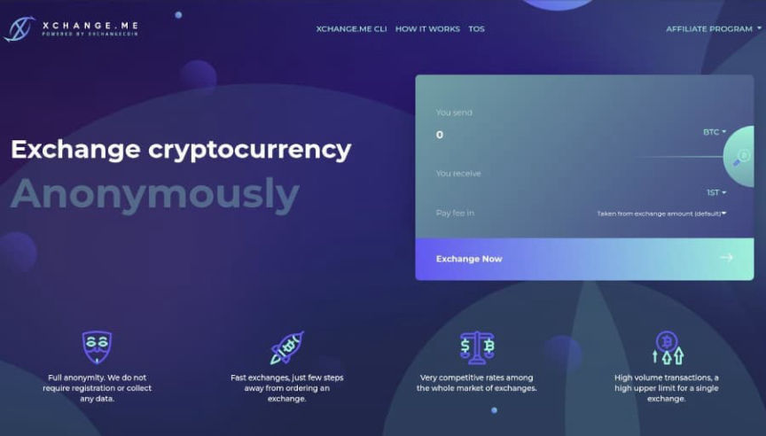
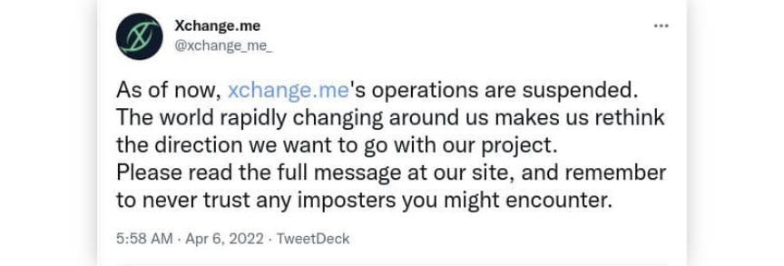
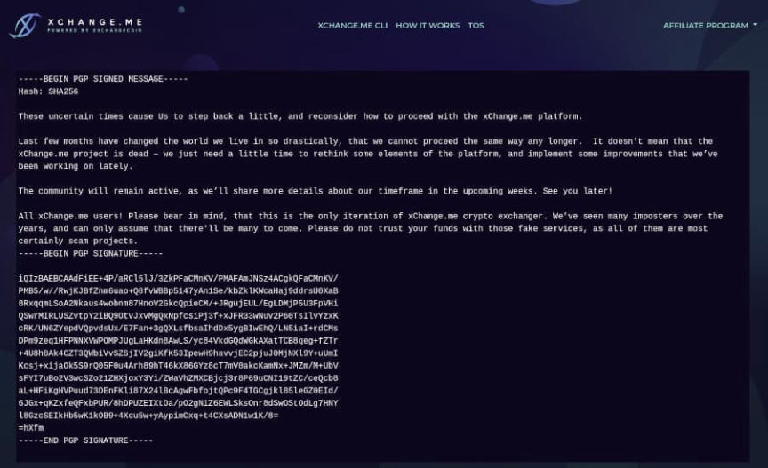
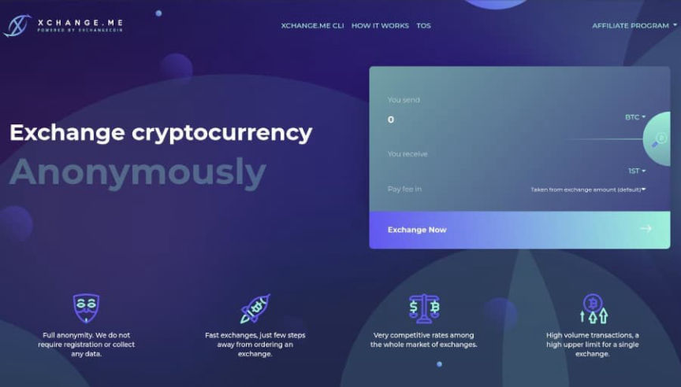
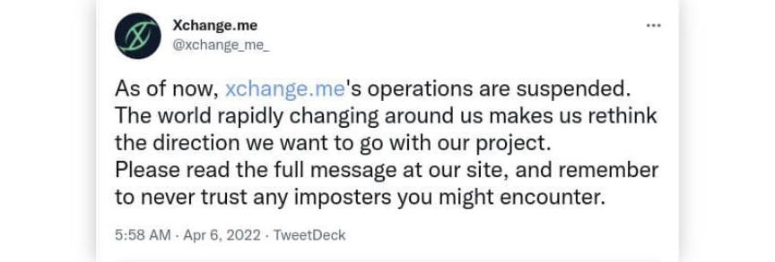
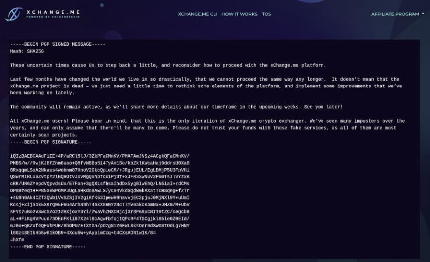

Where Did xChange.me Go?
~2 min read | Published on 2022-06-07, tagged Exchange, General-News using 483 words.
The Tor-friendly cryptocurrency exchange service xChange.me ended operations earlier this year to “rethink the direction” of the service.

“Xchange.me is a modern cryptocurrency exchange software that offers fast, secure and cheap cryptocoins exchanges,” according to an archived description on the website.
In April 2022, the service’s official Twitter account, @xchange_me_, tweeted:
“As of now, http://xchange.me’s operations are suspended. The world rapidly changing around us makes us rethink the direction we want to go with our project. Please read the full message at our site, and remember to never trust any imposters you might encounter.”

Although the site still responded in May 2022, users could not exchange cryptocurrency. The site’s homepage displayed a PGP-signed announcement about the shutdown.
“These uncertain times cause Us to step back a little, and reconsider how to proceed with the xChange.me platform.”
“Last few months have changed the world we [em]live[/em] in so drastically that we cannot proceed the same way any longer. It doesn’t mean that the xChange.me project is [em]dead[/em] – we just need a little time to rethink some elements of the platform, and implement some improvements that we’ve been working on lately.”

“The community will remain active, as we’ll share more details about our timeframe in the upcoming weeks. See you later!”
“All xChange.me users! Please bear in mind, that this is the only iteration of xChange.me crypto exchanger. We’ve seen many imposters over the years, and can only assume that there’ll be many to come. Please do not trust your funds with those fake services, as all of them are most certainly scam projects.”
<details id="signed-message"><summary class="u__s a2w">Signed Message</summary><div class="a2x">
[email protected] PGP key<div class="highlight"><pre tabindex="0" class="chroma"><code class="language-fallback" data-lang="fallback"><span class="line"><span class="cl">-----BEGIN PGP SIGNED MESSAGE-----</span></span><span class="line"><span class="cl">Hash: SHA256</span></span><span class="line"><span class="cl"></span></span><span class="line"><span class="cl">These uncertain times cause Us to step back a little, and reconsider how to proceed with the xChange.me platform.</span></span><span class="line"><span class="cl"></span></span><span class="line"><span class="cl">Last few months have changed the world we live in so drastically, that we cannot proceed the same way any longer. It doesn’t mean that the xChange.me project is dead – we just need a little time to rethink some elements of the platform, and implement some improvements that we’ve been working on lately.</span></span><span class="line"><span class="cl"></span></span><span class="line"><span class="cl">The community will remain active, as we’ll share more details about our timeframe in the upcoming weeks. See you later!</span></span><span class="line"><span class="cl"></span></span><span class="line"><span class="cl">All xChange.me users! Please bear in mind, that this is the only iteration of xChange.me crypto exchanger. We've seen many imposters over the years, and can only assume that there'll be many to come. Please do not trust your funds with those fake services, as all of them are most certainly scam projects.</span></span><span class="line"><span class="cl">-----BEGIN PGP SIGNATURE-----</span></span><span class="line"><span class="cl"></span></span><span class="line"><span class="cl">iQIzBAEBCAAdFiEE+4P/aRCl5lJ/3ZkPFaCMnKV/PMAFAmJNSz4ACgkQFaCMnKV/</span></span><span class="line"><span class="cl">PMB5/w//RwjKJBfZnm6uao+Q8fvWBBp5147yAn1Se/kbZklKWcaHaj9ddrsU0XaB</span></span><span class="line"><span class="cl">8RxqqmLSoA2Nkaus4wobnm87HnoV2GkcQpieCM/+JRgujEUL/EgLDMjP5U3FpVHi</span></span><span class="line"><span class="cl">QSwrMIRLUSZvtpY2iBQ9OtvJxvMgQxNpfcsiPj3f+xJFR33wNuv2P60TsIlvYzxK</span></span><span class="line"><span class="cl">cRK/UN6ZYepdVQpvdsUx/E7Fan+3gQXLsfbsaIhdDx5ygBIwEhQ/LN5iaI+rdCMs</span></span><span class="line"><span class="cl">DPm9zeq1HFPNNXVWPOMPJUgLaHKdn8AwLS/yc84VkdGQdWGkAXatTCB8qeg+fZTr</span></span><span class="line"><span class="cl">+4U8h0Ak4CZT3QWbiVvSZSjIV2giKfK53IpewH9havvjEC2pjuJ0MjNXl9Y+uUmI</span></span><span class="line"><span class="cl">Kcsj+xijaOk5S9rQ05F0u4Arh89hT46kX86GYz8cT7mV0akcKamNx+JMZm/M+UbV</span></span><span class="line"><span class="cl">sFYI7uBo2V3wcSZo21ZHXjoxY3Yi/ZWaVhZMXCBjcj3r8P69uCNI19tZC/ceQcb8</span></span><span class="line"><span class="cl">aL+HFiKgHVPuud73DEnFKli87X24lBcAgwFbfojtQPc9F4TGCgjkl85leGZ0EId/</span></span><span class="line"><span class="cl">6JGx+qKZxfeQFxbPUR/8hDPUZEIXtOa/pO2gN1Z6EWLSksOnr8dSwOStOdLg7HNY</span></span><span class="line"><span class="cl">l8GzcSEIkHb5wK1kOB9+4Xcu5w+yAypimCxq+t4CXsADN1w1K/8=</span></span><span class="line"><span class="cl">=hXfm</span></span><span class="line"><span class="cl">-----END PGP SIGNATURE-----</span></span></code></details>

The xChange.me homepage before the shutdown.
“Xchange.me is a modern cryptocurrency exchange software that offers fast, secure and cheap cryptocoins exchanges,” according to an archived description on the website.
In April 2022, the service’s official Twitter account, @xchange_me_, tweeted:
“As of now, http://xchange.me’s operations are suspended. The world rapidly changing around us makes us rethink the direction we want to go with our project. Please read the full message at our site, and remember to never trust any imposters you might encounter.”

The xChange.me Twitter account has been inactive since this Tweet.
Although the site still responded in May 2022, users could not exchange cryptocurrency. The site’s homepage displayed a PGP-signed announcement about the shutdown.
“These uncertain times cause Us to step back a little, and reconsider how to proceed with the xChange.me platform.”
“Last few months have changed the world we [em]live[/em] in so drastically that we cannot proceed the same way any longer. It doesn’t mean that the xChange.me project is [em]dead[/em] – we just need a little time to rethink some elements of the platform, and implement some improvements that we’ve been working on lately.”

“The community will remain active, as we’ll share more details about our timeframe in the upcoming weeks. See you later!”
“All xChange.me users! Please bear in mind, that this is the only iteration of xChange.me crypto exchanger. We’ve seen many imposters over the years, and can only assume that there’ll be many to come. Please do not trust your funds with those fake services, as all of them are most certainly scam projects.”
<details id="signed-message"><summary class="u__s a2w">Signed Message</summary><div class="a2x">
[email protected] PGP key<div class="highlight"><pre tabindex="0" class="chroma"><code class="language-fallback" data-lang="fallback"><span class="line"><span class="cl">-----BEGIN PGP SIGNED MESSAGE-----</span></span><span class="line"><span class="cl">Hash: SHA256</span></span><span class="line"><span class="cl"></span></span><span class="line"><span class="cl">These uncertain times cause Us to step back a little, and reconsider how to proceed with the xChange.me platform.</span></span><span class="line"><span class="cl"></span></span><span class="line"><span class="cl">Last few months have changed the world we live in so drastically, that we cannot proceed the same way any longer. It doesn’t mean that the xChange.me project is dead – we just need a little time to rethink some elements of the platform, and implement some improvements that we’ve been working on lately.</span></span><span class="line"><span class="cl"></span></span><span class="line"><span class="cl">The community will remain active, as we’ll share more details about our timeframe in the upcoming weeks. See you later!</span></span><span class="line"><span class="cl"></span></span><span class="line"><span class="cl">All xChange.me users! Please bear in mind, that this is the only iteration of xChange.me crypto exchanger. We've seen many imposters over the years, and can only assume that there'll be many to come. Please do not trust your funds with those fake services, as all of them are most certainly scam projects.</span></span><span class="line"><span class="cl">-----BEGIN PGP SIGNATURE-----</span></span><span class="line"><span class="cl"></span></span><span class="line"><span class="cl">iQIzBAEBCAAdFiEE+4P/aRCl5lJ/3ZkPFaCMnKV/PMAFAmJNSz4ACgkQFaCMnKV/</span></span><span class="line"><span class="cl">PMB5/w//RwjKJBfZnm6uao+Q8fvWBBp5147yAn1Se/kbZklKWcaHaj9ddrsU0XaB</span></span><span class="line"><span class="cl">8RxqqmLSoA2Nkaus4wobnm87HnoV2GkcQpieCM/+JRgujEUL/EgLDMjP5U3FpVHi</span></span><span class="line"><span class="cl">QSwrMIRLUSZvtpY2iBQ9OtvJxvMgQxNpfcsiPj3f+xJFR33wNuv2P60TsIlvYzxK</span></span><span class="line"><span class="cl">cRK/UN6ZYepdVQpvdsUx/E7Fan+3gQXLsfbsaIhdDx5ygBIwEhQ/LN5iaI+rdCMs</span></span><span class="line"><span class="cl">DPm9zeq1HFPNNXVWPOMPJUgLaHKdn8AwLS/yc84VkdGQdWGkAXatTCB8qeg+fZTr</span></span><span class="line"><span class="cl">+4U8h0Ak4CZT3QWbiVvSZSjIV2giKfK53IpewH9havvjEC2pjuJ0MjNXl9Y+uUmI</span></span><span class="line"><span class="cl">Kcsj+xijaOk5S9rQ05F0u4Arh89hT46kX86GYz8cT7mV0akcKamNx+JMZm/M+UbV</span></span><span class="line"><span class="cl">sFYI7uBo2V3wcSZo21ZHXjoxY3Yi/ZWaVhZMXCBjcj3r8P69uCNI19tZC/ceQcb8</span></span><span class="line"><span class="cl">aL+HFiKgHVPuud73DEnFKli87X24lBcAgwFbfojtQPc9F4TGCgjkl85leGZ0EId/</span></span><span class="line"><span class="cl">6JGx+qKZxfeQFxbPUR/8hDPUZEIXtOa/pO2gN1Z6EWLSksOnr8dSwOStOdLg7HNY</span></span><span class="line"><span class="cl">l8GzcSEIkHb5wK1kOB9+4Xcu5w+yAypimCxq+t4CXsADN1w1K/8=</span></span><span class="line"><span class="cl">=hXfm</span></span><span class="line"><span class="cl">-----END PGP SIGNATURE-----</span></span></code></details>